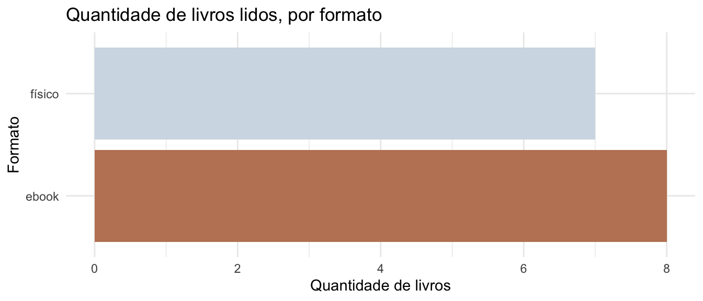
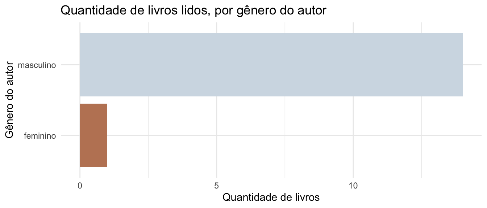
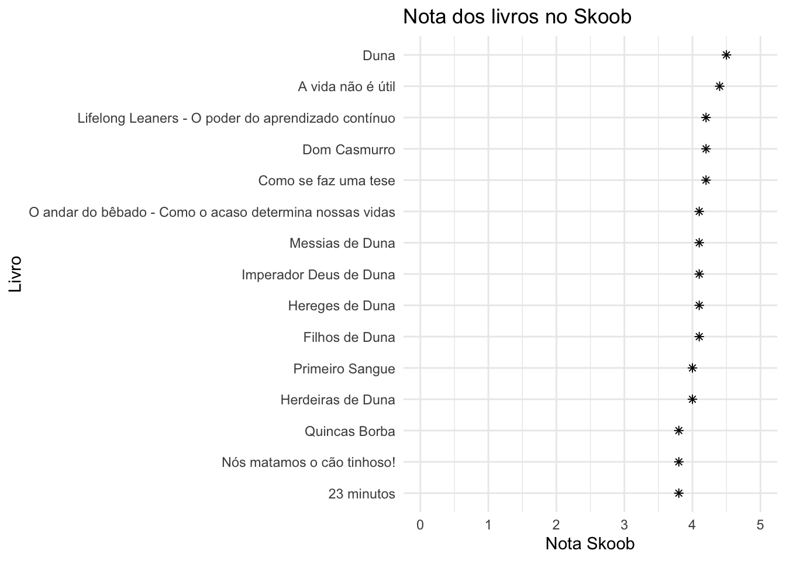

Hoje, 25 de julho, é o dia do escritor!
Para comemorar, pensei em juntar duas coisas que gosto bastante (ler + análise de dados) e explorar com vocês as minhas leituras do primeiro semestre de 2024. Isso aparentemente é um estilo de vídeo comum no YouTube, eu pessoalmente adorei o vídeo do canal Seleção Literária, e me inspirei um pouco nele para fazer esse post.
Dados de leituras
Eu tive o privilégio de ter sido incentivada a ler desde criança. Nos últimos anos, principalmente durante o doutorado, eu não conseguia ler muito além de fantasia (para desconectar um pouco!). Mas, neste ano, tenho lido mais, e buscado ter uma rotina de leitura diária.
Eu comecei a registrar os livros que estava lendo no ano no Skoob, uma rede social brasileira onde as pessoas podem registrar suas leituras e suas impressões.
Infelizmente, não encontrei nenhuma forma no Skoob de exportar os dados das minhas leituras. Então, eu comecei a registrar manualmente em uma planilha no Google Sheets. Eu deixei ela aberta para leitura, caso alguém queira ver como organizei os dados. Mas atenção: só tem leituras a partir do ano de 2024, ok?
Esse post vai ser uma análise exploratória dos dados que eu registrei. Vamos lá!
Carregando os dados
Primeiro, vamos carregar os pacotes necessários:
Agora, vamos carregar os dados da planilha. Em um post passado, eu expliquei como fazer isso.
# Criando um vetor com o link da tabela no Google Sheets
link_google_sheets <- "https://docs.google.com/spreadsheets/d/1D8rh2frRvQ_YSLDrljpiqDCcTJdCjoyMb3rfoEwjPjE/edit?usp=sharing"
# Tabela de leituras
tabela_leituras <- read_sheet(link_google_sheets, sheet = "leituras")
# Tabela de autoria
tabela_autoria <- read_sheet(link_google_sheets, sheet = "autoria")Vamos dar uma olhada nos dados:
glimpse(tabela_leituras)Rows: 28
Columns: 19
$ ano_leitura <dbl> 2024, 2024, 2024, 2024, 2024, 2024, 2024, 2024…
$ semestre_leitura <dbl> 1, 1, 1, 1, 1, 1, 1, 1, 1, 1, 1, 1, 1, 1, 1, 2…
$ status_leitura <chr> "completo", "completo", "completo", "completo"…
$ mes_leitura_inicio <chr> "Janeiro", "Janeiro", "Fevereiro", "Março", "M…
$ mes_leitura_fim <chr> "Janeiro", "Fevereiro", "Fevereiro", "Março", …
$ ordem <dbl> 1, 2, 3, 4, 5, 6, 7, 8, 9, 10, 11, 12, 13, 14,…
$ nome <chr> "Lifelong Leaners - O poder do aprendizado con…
$ ano_publicacao_original <dbl> 2021, 2009, 1977, 2020, 1965, 1969, 1976, 1981…
$ editora <chr> "Gente", "Zahar", "Perspectiva", "Companhia da…
$ n_paginas <dbl> 256, 264, 224, 128, 680, 272, 528, 512, 568, 5…
$ idioma_leitura <chr> "português", "português", "português", "portug…
$ tipo <chr> "físico", "ebook", "físico", "físico", "ebook"…
$ genero <chr> "Desenvolvimento Profissional", "Divulgação ci…
$ autoria_nome <chr> "Conrado Schlochauer", "Leonard Mlodinow", "Um…
$ extra_tags <chr> NA, NA, NA, NA, NA, NA, NA, NA, NA, NA, "vesti…
$ nota_skoob <dbl> 4.2, 4.1, 4.2, 4.4, 4.5, 4.1, 4.1, 4.1, 4.1, 4…
$ n_avaliacoes_skoob <dbl> 197, 3363, 49, 3833, 21847, 240, 59, 1515, 100…
$ atualizacao_nota_skoob <dttm> 2024-07-25, 2024-07-25, 2024-07-25, 2024-07-2…
$ link_skoob <chr> "https://www.skoob.com.br/lifelong-learners-11…glimpse(tabela_autoria)Rows: 19
Columns: 4
$ autoria_nome <chr> "Ailton Krenak", "Amélie Nothomb", "Art Spiegelman", "B…
$ autoria_genero <chr> "masculino", "feminino", "masculino", "masculino", "mas…
$ autoria_raca <chr> "indígena", "branca", "branca", "branca", "branca", "br…
$ autoria_pais <chr> "Brasil", "Bélgica", "Estados Unidos", "Estados Unidos"…Na tabela leituras, tem algumas informações sobre os livros que eu li. Vamos filtrar para obter os dados das leituras do primeiro semestre de 2024.
leituras_filtradas <- tabela_leituras |>
filter(ano_leitura == 2024,
semestre_leitura == 1,
status_leitura == "completo") Podemos usar a função left_join() do pacote dplyr para unir as duas tabelas (de leituras e autoria):
dados <- leituras_filtradas |>
left_join(tabela_autoria, by = "autoria_nome")Agora, podemos ver a estrutura da tabela criada:
glimpse(dados)Rows: 15
Columns: 22
$ ano_leitura <dbl> 2024, 2024, 2024, 2024, 2024, 2024, 2024, 2024…
$ semestre_leitura <dbl> 1, 1, 1, 1, 1, 1, 1, 1, 1, 1, 1, 1, 1, 1, 1
$ status_leitura <chr> "completo", "completo", "completo", "completo"…
$ mes_leitura_inicio <chr> "Janeiro", "Janeiro", "Fevereiro", "Março", "M…
$ mes_leitura_fim <chr> "Janeiro", "Fevereiro", "Fevereiro", "Março", …
$ ordem <dbl> 1, 2, 3, 4, 5, 6, 7, 8, 9, 10, 11, 12, 13, 14,…
$ nome <chr> "Lifelong Leaners - O poder do aprendizado con…
$ ano_publicacao_original <dbl> 2021, 2009, 1977, 2020, 1965, 1969, 1976, 1981…
$ editora <chr> "Gente", "Zahar", "Perspectiva", "Companhia da…
$ n_paginas <dbl> 256, 264, 224, 128, 680, 272, 528, 512, 568, 5…
$ idioma_leitura <chr> "português", "português", "português", "portug…
$ tipo <chr> "físico", "ebook", "físico", "físico", "ebook"…
$ genero <chr> "Desenvolvimento Profissional", "Divulgação ci…
$ autoria_nome <chr> "Conrado Schlochauer", "Leonard Mlodinow", "Um…
$ extra_tags <chr> NA, NA, NA, NA, NA, NA, NA, NA, NA, NA, "vesti…
$ nota_skoob <dbl> 4.2, 4.1, 4.2, 4.4, 4.5, 4.1, 4.1, 4.1, 4.1, 4…
$ n_avaliacoes_skoob <dbl> 197, 3363, 49, 3833, 21847, 240, 59, 1515, 100…
$ atualizacao_nota_skoob <dttm> 2024-07-25, 2024-07-25, 2024-07-25, 2024-07-25…
$ link_skoob <chr> "https://www.skoob.com.br/lifelong-learners-1…
$ autoria_genero <chr> "masculino", "masculino", "masculino", "mascul…
$ autoria_raca <chr> "branca", "branca", "branca", "indígena", "bra…
$ autoria_pais <chr> "Brasil", "Estados Unidos", "Itália", "Brasil"…Análise exploratória
tabela_resumo <- dados |>
summarise(
quantidade_livros = n(),
soma_paginas = sum(n_paginas),
media_paginas_por_dia = round(soma_paginas / (365.25/2))
)
tabela_resumo |>
kable()| quantidade_livros | soma_paginas | media_paginas_por_dia |
|---|---|---|
| 15 | 5092 | 28 |
No primeiro semestre de 2024, eu li 15 livros, que somados tem um total de 5092 páginas!
Isso dá, em média, aproximadamente 28 páginas por dia.
Vamos agora responder algumas perguntas?
Formato de leitura: livro físico ou ebook?
É comum para mim ler um livro físico e um ebook ao mesmo tempo. Gosto muito de ler livros no Kindle, pois me ajuda a dormir (e também nos momentos de insônia!). Não a categoria de audiolivro, pois eu ainda não consegui me adaptar a essa forma de leitura: eu perco a concentração muito fácil.
Vamos ver como foi a distribuição das minhas leituras por formato:
livros_por_formato <- dados |>
group_by(tipo) |>
summarise(
quantidade_livros = n(),
soma_paginas = sum(n_paginas),
)
livros_por_formato |>
ggplot() +
aes(y = tipo, x = quantidade_livros) +
geom_col(aes(fill = tipo)) +
labs(
title = "Quantidade de livros lidos, por formato",
x = "Quantidade de livros",
y = "Formato"
) +
theme_minimal() +
scale_fill_manual(values = c("#bf8464", "#d2dce5")) +
theme(legend.position = "none")
Considerando a quantidade de livros, ficou bem equilibrado a leitura entre formato físico e ebook!
E se considerar o número de páginas?
livros_por_formato |>
ggplot() +
aes(y = tipo, x = soma_paginas) +
geom_col(aes(fill = tipo)) +
labs(
title = "Número de páginas lidas, por formato",
x = "Número de páginas",
y = "Formato"
) +
theme_minimal() +
scale_fill_manual(values = c("#bf8464", "#d2dce5")) +
theme(legend.position = "none")Nesse caso, o número de páginas lidas em livros ebook foi mais que o dobro de páginas lidas em livros físicos!
Spoiler: isso aconteceu pois eu li uma série de livros inteira no Kindle! Mas logo falo mais sobre isso.
Qual foi a editora que mais publicou livros que eu li?
Ao explorar os dados, eu percebi que eu li livros de várias editoras diferentes, mas uma editora se destacou: a Aleph. Eu adoro essa editora pois ela tem um catálogo INCRÍVEL de livros de ficção científica! E esse é um gênero que eu adoro ler.
Quem escreveu esses livros?
Vamos ver agora quem foram as pessoas autoras que mais apareceram nas minhas leituras?
| Autor | Quantidade de livros |
|---|---|
| Frank Herbert | 6 |
| Machado de Assis | 2 |
| Ailton Krenak | 1 |
| Amélie Nothomb | 1 |
| Conrado Schlochauer | 1 |
| Leonard Mlodinow | 1 |
| Luís Bernardo Honwana | 1 |
| Umberto Eco | 1 |
| Waldson Souza | 1 |
Bom, com essa tabela já deu para imaginar qual é a série de livros que eu li em ebook! Neste semestre, li os seis livros da série “Duna”, do autor Frank Herbert. Esses livros foram publicados pela Aleph aqui no Brasil.
Outro autor que eu li mais que um livro neste primeiro semestre foi Machado de Assis. Por incr√≠vel que pare√ßa, eu não havia lido Machado antes! E por incr√≠vel que pare√ßa tamb√©m, não foi pela repercussão da ‚ÄúTiktoker americana‚Äù. Eu havia comprado alguns livros que estão na lista atual da FUVEST, e um deles foi ‚ÄúQuincas Borba‚Äù. Que livro legal! Quanta gente interesseira! üòÇ
Depois me falaram que, se eu gostei de “Quincas Borba”, eu deveria ler “Dom Casmurro”. E eu li e adorei! E se alguém me perguntar “traiu ou não traiu?”, a minha opinião é de que o Bentinho viajava na maionese e tinha um ciúmes obssessivo pela Capitu desde muito cedo. Não acho que rolou traição. Mas o que achei mais incrível é que, ao ler esse livro, a interpretação pode ser totalmente diferente dependendo de quem está lendo. Enfim, o próximo livro do Machado na minha lista é o “Memórias Póstumas de Brás Cubas”, o livro que a Tiktoker tanto falou bem.
País de origem
Algo que é interessante é ver a diversidade da autoria dos livros que eu li. Vamos ver a quantidade de livros lidos por país de origem dos autores:
autoria_por_pais <- dados |>
group_by(autoria_pais) |>
summarise(
quantidade_livros = n()
) |>
mutate(autoria_pais = fct_reorder(autoria_pais, quantidade_livros))
autoria_por_pais |>
ggplot() +
aes(y = autoria_pais, x = quantidade_livros) +
geom_col(fill = "#7c685f") +
labs(
title = "Quantidade de livros lidos, por país de origem do autor",
x = "Quantidade de livros",
y = "País de origem do autor"
) +
theme_minimal()As minhas leituras foram principalmente de autores dos Estados Unidos e do Brasil. Futuramente, eu gostaria muito de ler mais livros de autoras e autores brasileiros!
Gênero dos autores
Algo um pouco triste na minha lista é tentar visualizar a diversidade de gênero dos autores. Quase todos os livros que eu li foram escritos por homens, e apenas um por uma mulher! Isso é algo que eu gostaria de mudar nas minhas leituras futuras: ler mais livros de autoras mulheres.
autoria_por_genero <- dados |>
group_by(autoria_genero) |>
summarise(
quantidade_livros = n()
)
autoria_por_genero |>
ggplot() +
aes(y = autoria_genero, x = quantidade_livros) +
geom_col(aes(fill = autoria_genero)) +
labs(
title = "Quantidade de livros lidos, por gênero do autor",
x = "Quantidade de livros",
y = "Gênero do autor"
) +
theme_minimal() +
scale_fill_manual(values = c("#bf8464", "#d2dce5")) +
theme(legend.position = "none")
Cor/Raça dos autores
Essa questão é um pouco complicada, pois não tem em um lugar específico a cor/raça dos autores. Eu busquei categorizar baseando em informações que eu encontrei na internet, mas é algo subjetivo.
autoria_por_raca <- dados |>
group_by(autoria_raca) |>
summarise(
quantidade_livros = n()
)|>
mutate(autoria_raca = fct_reorder(autoria_raca, quantidade_livros))
autoria_por_raca |>
ggplot() +
aes(y = autoria_raca, x = quantidade_livros) +
geom_col(fill = "#bf8464") +
labs(
title = "Quantidade de livros lidos, por raça do autor",
x = "Quantidade de livros",
y = "Raça do autor"
) +
theme_minimal() +
theme(legend.position = "none")O que gostei mais?
Falar das leituras favoritas é muito pessoal, pois depende de vários fatores: o livro em si, como eu estava na época, se eu engajei na leitura, etc. Mas, dos livros que eu li, os que eu mais gostei foram:
Duna, Frank Herbert ⭐⭐⭐⭐⭐
Dom Casmurro, Machado de Assis ⭐⭐⭐⭐⭐
Imperador Deus de Duna, Frank Herbert (Livro 4) ⭐⭐⭐⭐⭐
Notas dos livros, segundo outras pessoas que usam o Skoob
Muitas vezes, usamos a nota dos livros para escolher as próximas leituras. Eu pessoalmente acho que não necessariamente a nota de um livro reflete se eu vou gostar ou não dele, pois a nota depende de fatores como: quantas avaliações ele recebeu (um livro com poucas avaliações pode ter uma nota mais alta facilmente), o gosto das pessoas que avaliaram, etc.
Mas vamos lá!
dados |>
mutate(nome = fct_reorder(nome, nota_skoob)) |>
ggplot() +
geom_point(aes(x = nota_skoob, y = nome), shape = 8) +
scale_x_continuous(limits = c(0, 5)) +
labs(
title = "Nota dos livros no Skoob",
x = "Nota Skoob",
y = "Livro"
) +
theme_minimal() +
theme(legend.position = "none")
Bom, como eu disse, a nota de um livro não necessariamente reflete se eu vou gostar ou não dele. Eu gostei bastante das leituras que atualmente estão com a nota mais baixa dentre os livros lidos neste semestre: 3.8! São esses: “Quincas Borba” (Machado de Assis), “Nós matamos o cão tinhoso!” (Luís Bernardo Honwana), e “23 minutos” (Waldson Souza). Minha hipótese é que os dois primeiros citados recebem notas menores por serem livros que estão na lista do vestibular, e muitas vezes as pessoas leem por obrigação e isso reflete na nota do livro. No caso do livro “23 minutos”, é um livro juvenil que está em pré-lançamento, e por enquanto foi lido pelos assinantes da TAG Inéditos, um público que provavelmente é mais adulto, e isso também reflete na nota.
Por outro lado, o livro “O andar do bêbado” foi a leitura que eu menos gostei do semestre, e está com a nota 4.1 no Skoob.
Conclusão
Neste primeiro semestre, li mais do que nos últimos anos. O melhor foi ter consolidado o hábito de ler todos os dias (nem que seja um pouco antes de dormir!).
A leitura da série Duna foi o que mais “ocupou” minhas leituras do semestre. Eu adorei a série, e fiquei muito feliz de ter lido!
Em termos de diversidade, as minhas leituras deixaram a desejar. Isso é algo que eu gostaria de mudar nas minhas leituras futuras.
Algo que não comentei anteriormente: eu assinei a TAG, e desde Junho estou recebendo livros surpresa em casa todo mês. Tem sido bem legal, e duas das leituras da lista foram livros que eu recebi da TAG.
Se quiser saber mais sobre as minhas leituras, eu uso o Skoob (como falei anteriormente). Edit: após a escrita do post, também criei uma conta no Goodreads!
Espero que tenham gostado! Eu me diverti escrevendo este post.
Lista de leituras

Segue abaixo a lista completa, ordenada pelo ano de publicação original do livro:
dados |>
mutate(link = str_glue("[{nome}]({link_skoob})")) |>
arrange(ano_publicacao_original) |>
select(link, autoria_nome) |>
kable(col.names = c("Livro", "Autoria"))| Livro | Autoria |
|---|---|
| Quincas Borba | Machado de Assis |
| Dom Casmurro | Machado de Assis |
| Nós matamos o cão tinhoso! | Luís Bernardo Honwana |
| Duna | Frank Herbert |
| Messias de Duna | Frank Herbert |
| Filhos de Duna | Frank Herbert |
| Como se faz uma tese | Umberto Eco |
| Imperador Deus de Duna | Frank Herbert |
| Hereges de Duna | Frank Herbert |
| Herdeiras de Duna | Frank Herbert |
| O andar do bêbado - Como o acaso determina nossas vidas | Leonard Mlodinow |
| A vida não é útil | Ailton Krenak |
| Lifelong Leaners - O poder do aprendizado contínuo | Conrado Schlochauer |
| Primeiro Sangue | Amélie Nothomb |
| 23 minutos | Waldson Souza |
Feliz dia do escritor! üìö‚ú®
Extra - Mosaico das capas dos livros com o pacote {magick}
O mosaico das capas do livro foi feito usando o pacote magick, e o código está a seguir:
Código
capas <- dados |>
mutate(
formato_arquivo = tools::file_ext(url_capa),
nome_arquivo = str_glue(
"images/capas/{ano_publicacao_original}-{janitor::make_clean_names(autoria_nome)}-{janitor::make_clean_names(nome)}.{formato_arquivo}"
)
) |>
select(url_capa, nome_arquivo) |>
tidyr::drop_na(url_capa)
# Fazer download das capas
capas |>
group_split(nome_arquivo) |>
purrr::walk( ~ download.file(url = .x$url_capa, destfile = .x$nome_arquivo))
# Compor uma imagem com todas as capas
imagem_capas <- fs::dir_ls("images/capas/") |>
magick::image_read() |>
magick::image_montage(tile = "4x4",
geometry = 'x200+5+5',
gravity = "center")
# Salvar a composição
magick::image_write(imagem_capas, path = "images/mosaico_capas.jpg")